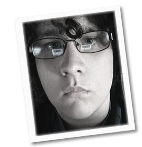

I am a sound engineer and programmer who is always seeking out new challenges and work opportunities.
I have a strong passion for all things technical and I am a very fast learner. It is
because of this that I have become a computer polygot of sorts; profecient with several computer
programming languages, as well as many different sound technologies, and various technical deciplines
such as networking, cybersecurity, web design, artificial intellegence, machine learning,
data analytics, and many others.
- Education
-
Northeast State Community College - Blountville TN
Major: Computer Information Technology
Concentration: Cyber Defense
- Skills
-
Office skills
Teamwork, Communication, Project Management
General computer skills
- Microsoft Office (access, word, excel, powerpoint, etc.),
- Libreoffice (writer, calc, impress, etc.),
- Digital Audio Workstations (Cubase, Ableton, Pro Tools, Fruity Loops),
- Collaborative Suites (Teams, Zoom, Discord, Rocket Chat, etc.)
- Video Editing (Sony Vegas)
- Familiarity with all major Operating Systems (Linux, Windows, & MacOS)
- Languages
-
Experience Level
- Experience
-
Atko
Game Programmer, Sound Designer - Remote - April 2020-Current
Development of an unreleased Multiplayer RPG Game (Source engine)
Responsibilites:
- Designing, programming, implementing, and testing new game features
- Engineering new engine graphical features and extending existing ones
- Composing an original sound track
- Designing soundscapes for levels
- Creating UI audio
Universal Fibers
Helpdesk Technician - Bristol, VA - April 2019-October 2020
Responsibilites:
- Desktop (hardware / software), Printing, Network, Systems (Active Directory, Office 365) troubleshooting support. Domestic and international
- Responsible for all support and troubleshooting of all A/V systems and conference rooms. (Crestron)
- Designing and implementing marketing technical displays (Planar + Intuiface)
- Troubleshooting and supporting existing POTS, SIP, and VOIP systems
- Architecture, design, and implementation of new VOIP systems
- Design and implementation of physical networking technologies
- Designing, programming, implementing, and testing of new custom software for realtime data analytics of manufacturing systems
- Strong Teamwork, Project Management, and Communication requirements
Highlands Fellowship
Sound Engineer - Abingdon, VA - January 2018-Current
Responsibilites:
- Operation of large Sound and Lighting systems for live events
- Certifications
-
Cisco Certified Network Associate (CCNA)
Cisco - May 2018-May 2021
Learn more about this certiciation: Exam Topics
LinkedIn Skill Assessments
Python, MySQL
I am currently ranked top 15% out of 265k people for SQL and top 15% out of 945k people for Python
1st in Computer Systems Technology
Skills USA
2018 Regional Competition
- References
- Available upon request